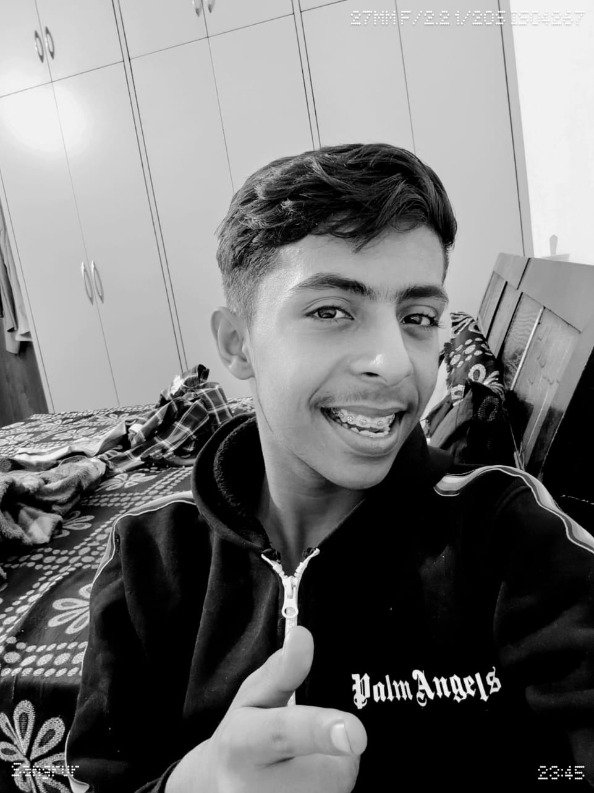
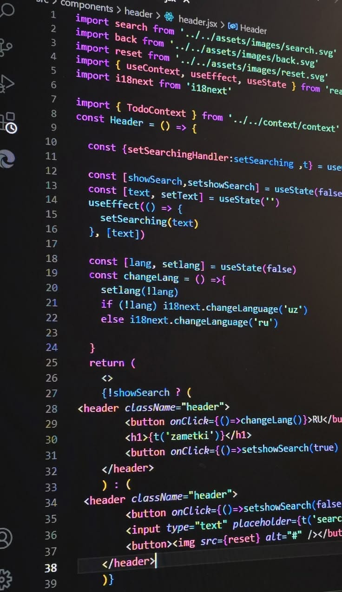
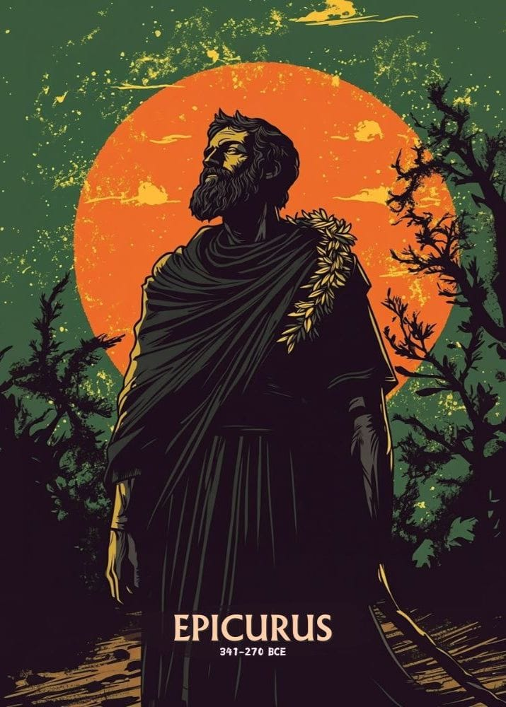
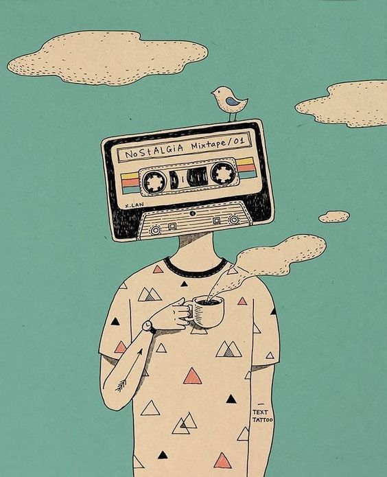
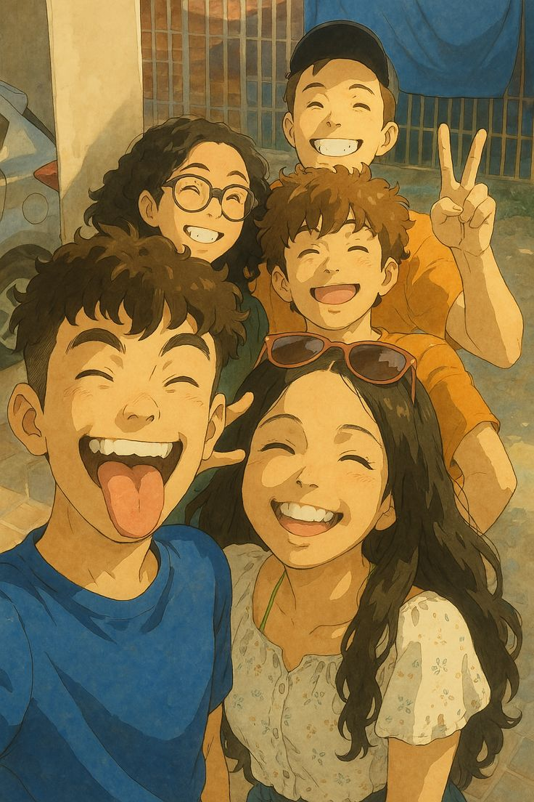

RTR
Rehan Thareja (Revealed)
This is my personal website and u will get to know a lot about me here and if you wish to connect with me you can reach out to me via these social media handles:

This side of mine is called The coder. I like to code a lot and am really ambitious to be a mechatronics engineer in the way achead and I might seem quite boring or overwhelming beacause of this and I totally understand that but believe there is a lot more to me

This side of mine is called the Philospher. I like to think a lot, argue about things even when they are right because I believe that someone is considered right only when he gets approval of a bunch of people that are in the majority and this does not mean that the majority cannot be wrong

This side of mine is called the instrumentalist. I like to play instruments also, for now I play ukulele only but I wish to play other instruments too. I Think they are a whole new world

This side of mine is called the friend. I like to be friends with people . I think if you can care for someone and make someone smile then you are the best person on this planet and I think that's the purpose of a human to be kind